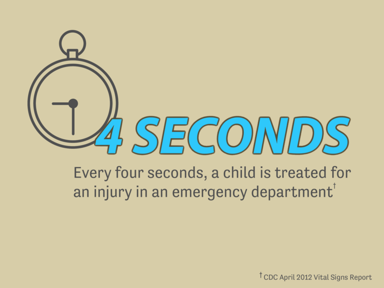
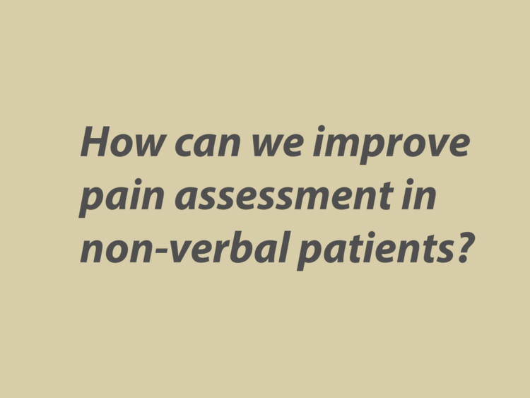
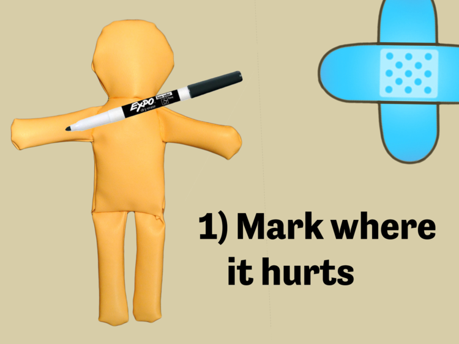
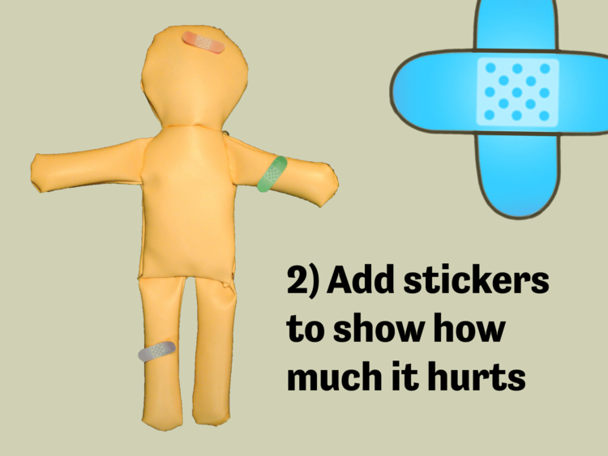
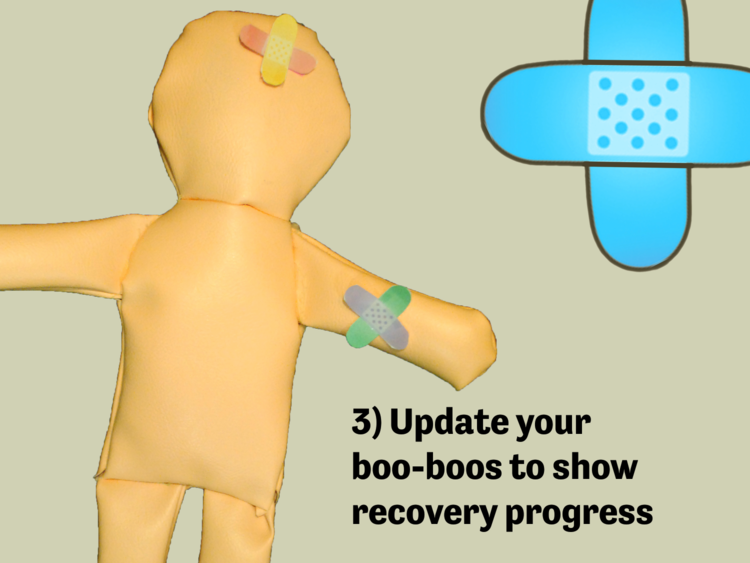
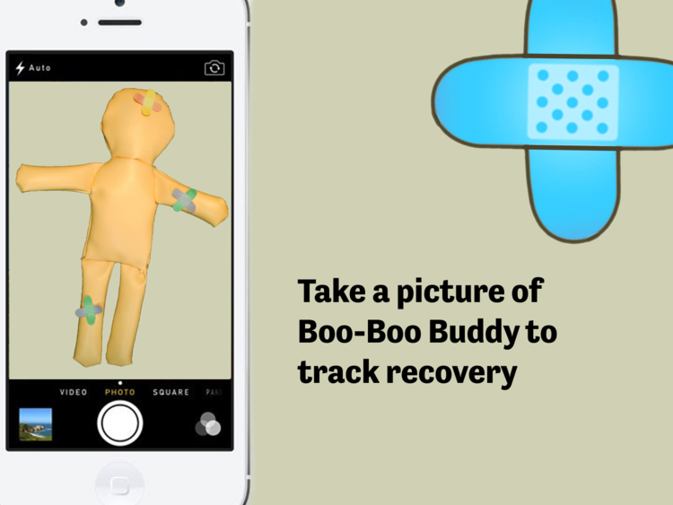
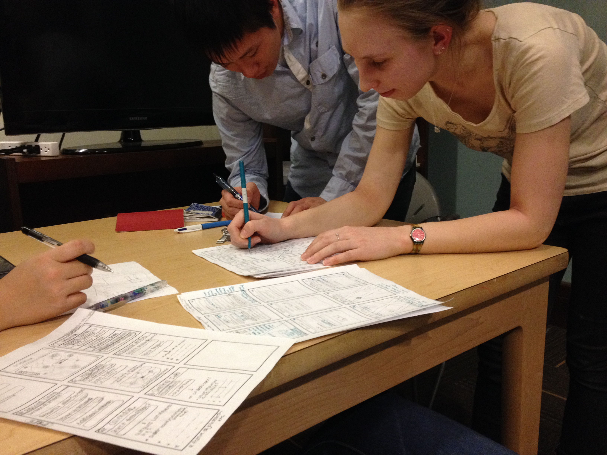
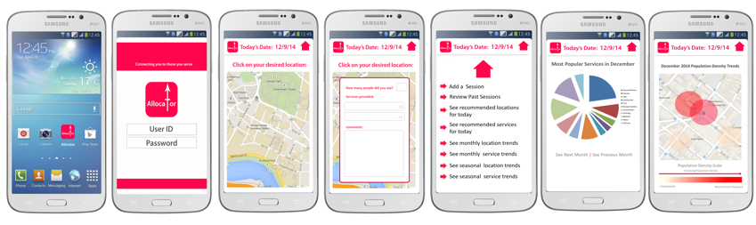

#teampatient: Boo Boo Buddy
Every four seconds, a child is treated for an injury in an emergency department. To begin treating injuries, doctors and nurses use pain assessment tools to determine the location and intensity of the patient's pain. Current pain assessment tools (1) don't capture multiple pain dimensions at once and (2) only measure pain at a single point in time. This is where the Boo Boo Buddy can help. Designed with children in mind, the Boo Boo Buddy is a dry erasable stuffed animal that allows children to (1) mark where it hurts (2) add stickers to show how much it hurts (3) update their boo-boos over time to track recovery progress. Using an accompanying smartphone app, the Boo-Boo Buddy will allow doctors and nurses to track changes in a patient's pain level over time and gain insight into treatment effectiveness. The Boo-Boo Buddy will lead to more effective pain management and treatment in pediatric patients.






Alleviating Child Hunger
Hunger is not a third-world problem. It is all around us, invisible and sinuous in the people it touches and and the ways it affects them. The hunger within the Greater Boston community manifests itself largely in households reducing their food intake and reducing the quality and variety of their diet due to competing basic needs. For example, over half of the hungry interviewed by the Greater Boston food had to choose between food and utilities (such as heat and electricity), rent and mortgage payments, and medical care. These choices are unacceptable, because food security should be a basic right. In particular, we are trying to help working families who do not receive enough government assistance to support their households and who cannot take advantage of local food pantries who have limited hours of operations. We are working to increase the accessibility and the availability of food to these families in partnership with already established food pantries and community centers.
Tackling Education with Data
Teachers spend hours every day designing worksheets that cover the same concepts that are taught all around the world. While the content has been taught many times before, teachers often create their worksheets from scratch because its hard to find material that matches their teaching style. Our team is creating an online platform that allows teachers to drag and drop questions from a bank of crowdsourced problems to easily customize the perfect worksheet that fits their teaching style and their classroom. Additionally, the platform can recommend questions based on the types of problems they have used for previous worksheets. This can save hours of time every day, allowing teachers to focus on students who need the most help or take some time to relax before after a busy day at school.
#IHFTH: Improving Healthcare for the Homeless
Target Population:
Homeless populations of Boston and Cambridge. People experiencing homelessness have a rather unique set of needs, and the resources currently available to them aren't enough to meet those needs.Problem:
Our first step was to learn about the lissues faced by people experiencing homelessness. Through our conversations with homeless men and women, and staff at homeless shelters, we identified four issues:- Theft
- Medication Adherence
- Shelter & Warmth
- Resource Allocation
Current Focus:
We decided to develop the Allocator because we feel that by helping shelters efficiently distribute resources, it could have a big impact on how many people are connected with the help they need.
 There are two main features we have in mind. The first involves street teams recording the number of people they see and the resources (food, hats, blankets, etc.) they hand out at certain points on their route. They can enter this information by tapping a location on a map and typing the information into a pop-up box. The information is compiled and then presented so that organizations can see trends, such as the most popular locations and resources at a certain time of year or the most needed resources for a specific location. This will allow organizations to effectively plan for their trips and can ease the transition for new members of a street team.
The other feature is a directory, which keeps track of events happening at local shelters, the number of beds available at various shelters, and the location of resources such as health clinics and food pantries. We hope that if we gather data from enough organizations, this would provide a centralized source where homeless people could find programs that meet their needs.
There are two main features we have in mind. The first involves street teams recording the number of people they see and the resources (food, hats, blankets, etc.) they hand out at certain points on their route. They can enter this information by tapping a location on a map and typing the information into a pop-up box. The information is compiled and then presented so that organizations can see trends, such as the most popular locations and resources at a certain time of year or the most needed resources for a specific location. This will allow organizations to effectively plan for their trips and can ease the transition for new members of a street team.
The other feature is a directory, which keeps track of events happening at local shelters, the number of beds available at various shelters, and the location of resources such as health clinics and food pantries. We hope that if we gather data from enough organizations, this would provide a centralized source where homeless people could find programs that meet their needs.

